5.3.3. Registro de Factura desde Recepción¶
Ubique en el menú de ADempiere, la carpeta “Gestión de Compras”, luego seleccione la ventana “Documentos por Pagar”, adjunto imagen para referencia.

Imagen 1. Menú de ADempiere
Podrá visualizar la ventana “Documentos por Pagar”, con todos los registros que contiene ADempiere referente a documentos por pagar.
Imagen 2. Ventana Documentos por Pagar
Seleccione la opción “Registro Nuevo” en la barra de herramientas de ADempiere, para crear un documento nuevo en la ventana “Documentos por Pagar”.
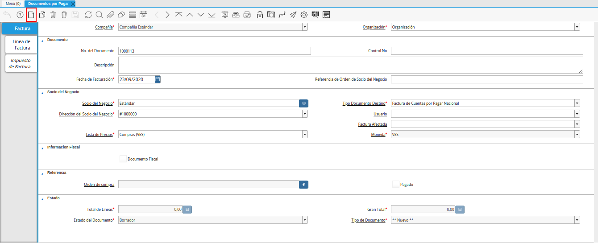
Imagen 3. Registro Nuevo
Seleccione en el campo “Organización”, la organización para la cual se esta realizando el documento por pagar de productos o servicios, el valor en el mismo debe ser diferente del símbolo (*).
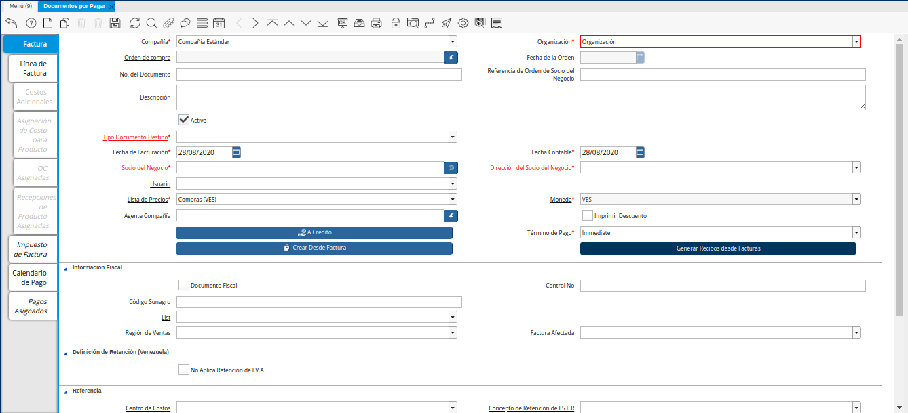
Imagen 4. Campo Organización
En el campo “No. de Documento”, no es necesario ingresarlo en forma manual, al momento de realizar un registro, ADempiere genera un número de secuencia automáticamente para el documento, al seleccionar la opción guardar del nuevo registro de documento por pagar.
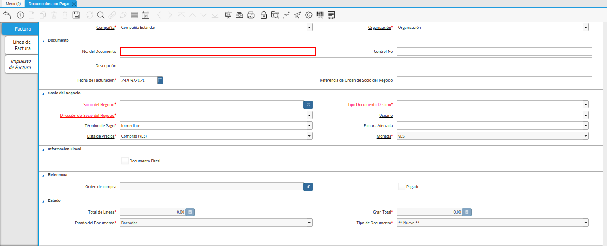
Imagen 5. Campo No. del Documento
Introduzca en el campo “Control No”, el número de control fiscal establecido para el documento que se encuentra realizando.
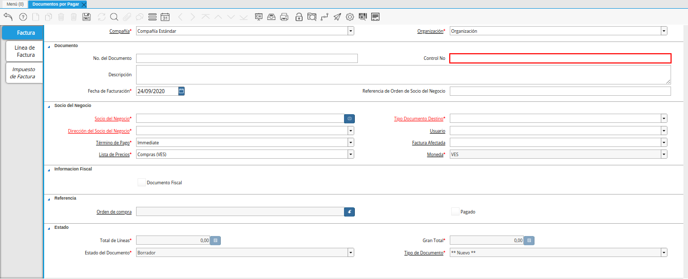
Imagen 6. Campo Control No.
Introduzca en el campo “Descripción”, una breve descripción referente al documento por pagar que se encuentra realizando.
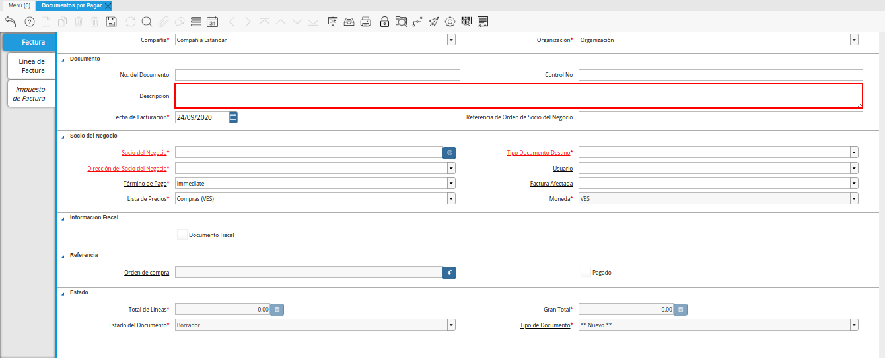
Imagen 7. Campo Descripción
Seleccione en el campo “Fecha Facturación”, la fecha que posee el documento por pagar en físico.
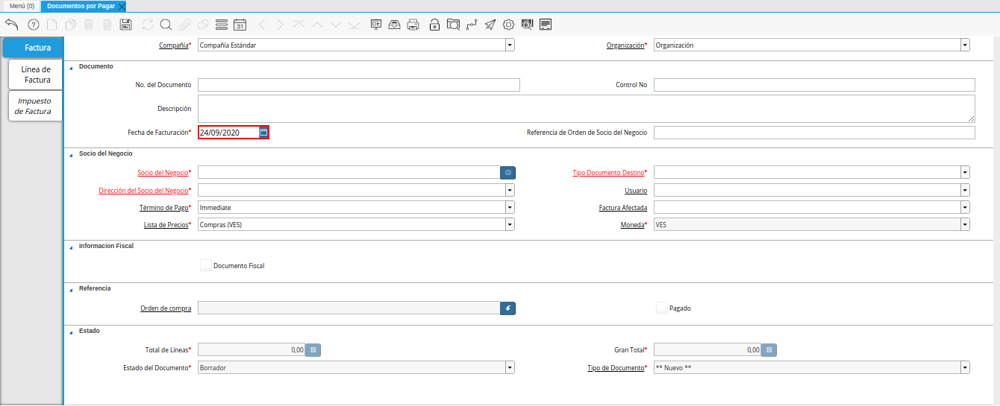
Imagen 8. Campo Fecha de Facturación
En el campo “Referencia de Orden de Socio del Negocio”, se puede ingresar la referencia de orden del socio del negocio para esta transacción específica. Frecuentemente los números de orden de compras se dan para ser impresas en las facturas como una referencia más fácil.
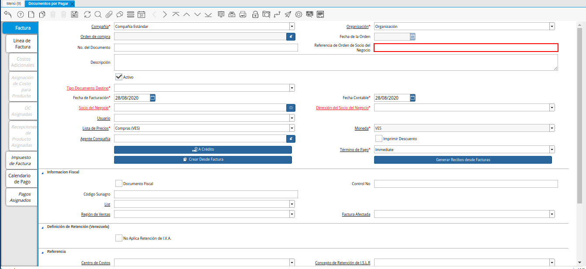
Imagen 9. Campo Referencia de Orden de Socio del Negocio
Seleccione el socio del negocio proveedor en el campo “Socio del Negocio”.
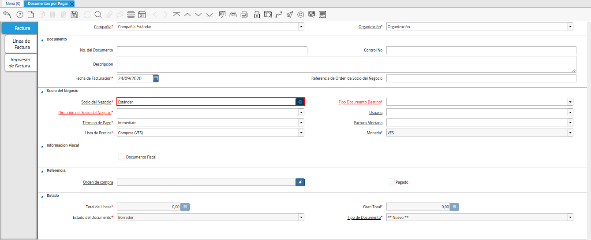
Imagen 10. Campo Socio del Negocio
Seleccione el tipo de documento a generar en el campo “Tipo de Documento”, la selección de este define el comportamiento del documento que se esta elaborando, dicho comportamiento se encuentra explicado en el documento “Tipo de Documento” elaborado por ERPyA.
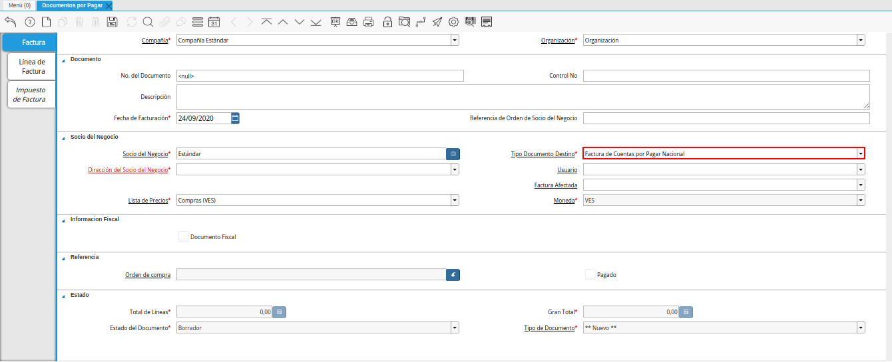
Imagen 11. Campo Tipo de Documento
Podrá visualizar en el campo “Dirección del Socio del Negocio”, la dirección de localización del socio del negocio proveedor.

Imagen 12. Campo Dirección del Socio del Negocio
De igual manera, puede visualizar en el campo “Usuario”, el usuario en ADempiere del socio del negocio seleccionado anteriormente.
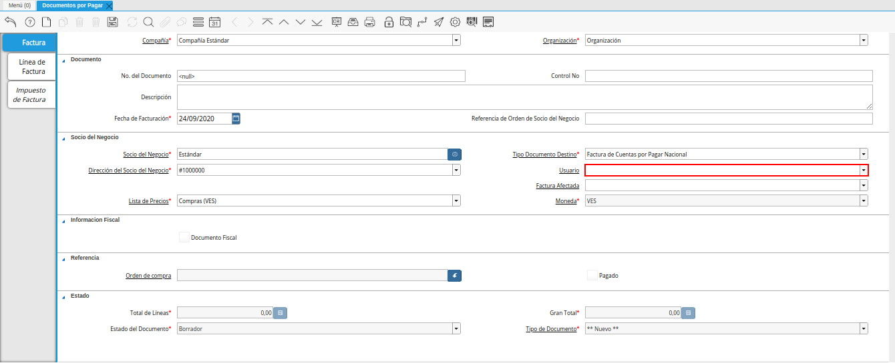
Imagen 13. Campo Usuario
Seleccione en el campo “Factura Afectada”, la factura afectada para ser asignada automáticamente al registro que se encuentra realizando.
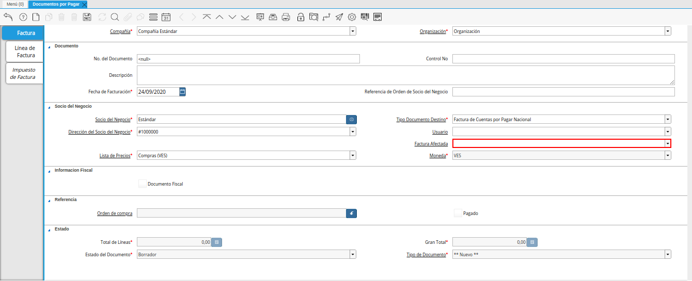
Imagen 14. Campo Factura Afectada
Seleccione en el campo “Lista de Precios”, la lista de precios con la cual requiere generar el documento por pagar.
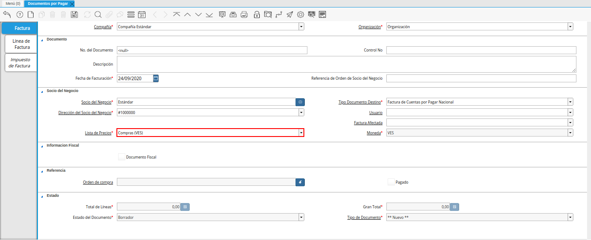
Imagen 15. Campo Lista de Precios
Podrá visualizar en el campo “Moneda”, la moneda definida para la lista de precios seleccionada.
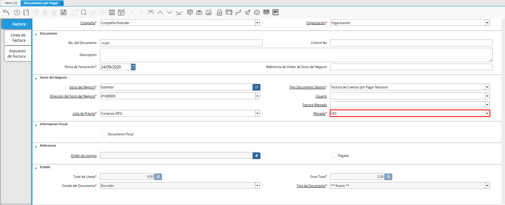
Imagen 16. Campo Moneda
El checklist “Documento Fiscal”, indica que el registro de documento por pagar es considerado un documento fiscal y se utiliza para las facturas declaradas.
Imagen 17. Checklist Documento Fiscal
Note
Recuerde guardar el registro de los campos de la ventana antes de cambiar a otra pestaña. Esto se puede realizar seleccionando el icono “Guardar Cambios”, ubicado en la barra de herramientas de ADempiere.
Seleccione la opción “Crear Desde Factura”, desplegada por el icono “Proceso”, ubicado en la barra de herramientas de ADempiere.
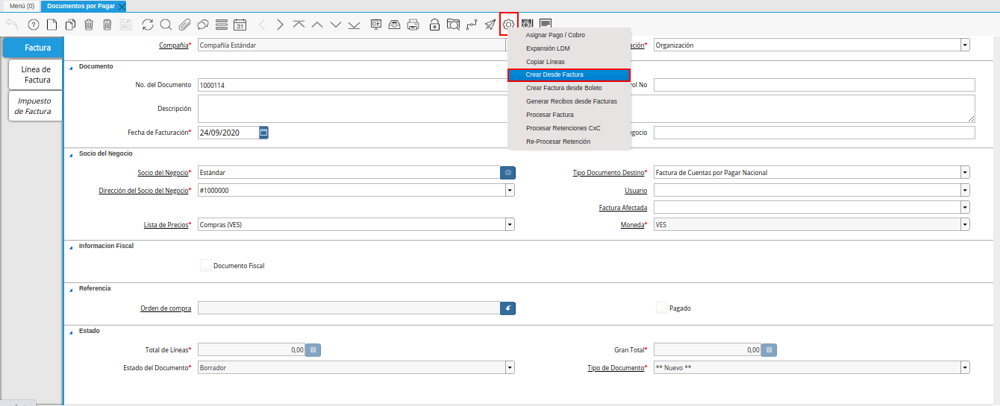
Imagen 18. Opción Crear Desde Factura del Icono Proceso
Podrá visualizar la ventana “Crear Desde una Orden / ADM / Factura / Recepción en una Factura”, que permite crear un documento por pagar desde una orden, autorización de devolución, factura o recepción.
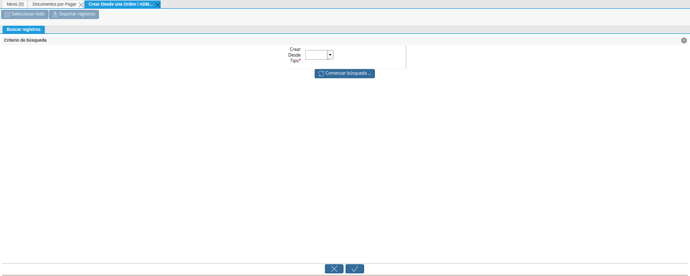
Imagem 19. Ventana Crear Desde una Orden / ADM / Factura / Recepción en una Factura
Seleccione en el campo “Crear Desde Tipo”, la opción desde la cual requiere generar el documento por pagar. Para este ejemplo es utilizada la opción “Entrega/Recepción”.
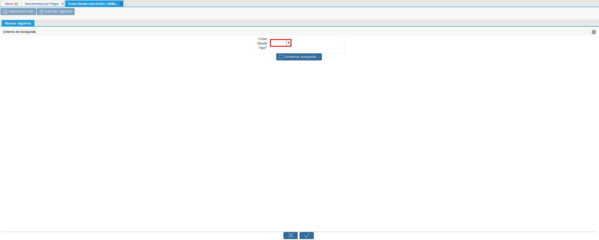
Imagen 20. Campo Crear Desde Tipo
Seleccione en el campo “Entrega/Recibo”, el número de documento correspondiente a la recepción desde la cual requiere generar el documento por pagar.
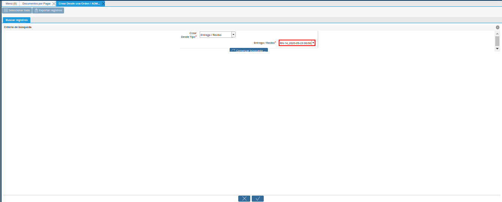
Imagen 21. Campo Entrega/Recibo
Seleccione la opción “Comenzar Búsqueda”, para filtar la información en base a lo seleccionado anteriormente.
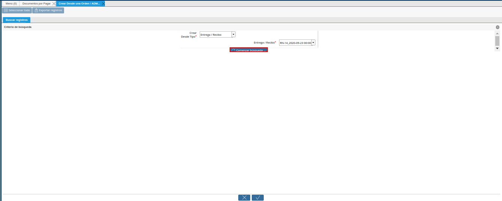
Imagen 22. Opción Comenzar Búsqueda
Seleccione el registro de la recepción y la opción “OK”, para cargar a la ventana “Documentos por Pagar”, la información del registro seleccionado.
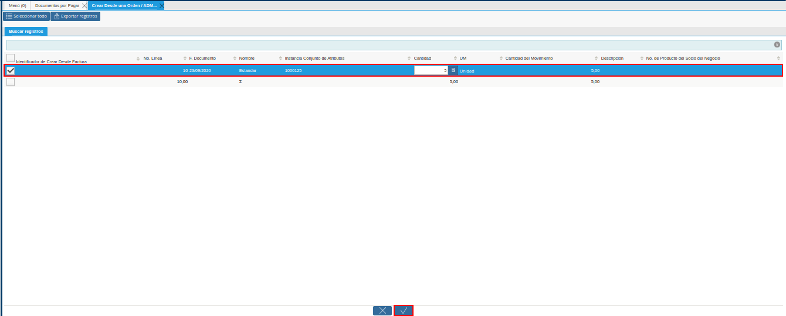
Imagen 23. Selección de Registro y Opción OK
Seleccione el icono “Refrescar”, ubicado en la barra de herramientas de ADempiere, para refrescar la ventana “Documentos por Pagar” y sea cargada la información de la recepción.

Imagen 24. Icono Refrescar
5.3.3.1. Línea de la Factura¶
Seleccione la pestaña “Línea de Factura”, para confirmar la información cargada desde la ventana “Crear Desde una Orden / ADM / Factura / Recepción en una Factura”, correspondientes al documento por pagar que se encuentra realizando.
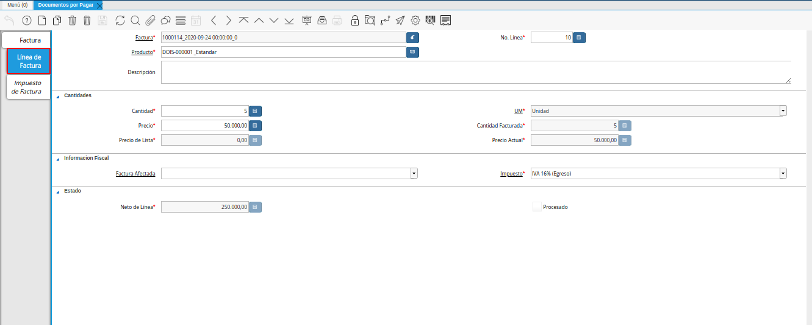
Imagen 25. Pestaña Línea de Factura
5.3.3.2. Factura¶
Regrese a la ventana principal “Factura”, para completar el documento por pagar que se encuentra realizando.
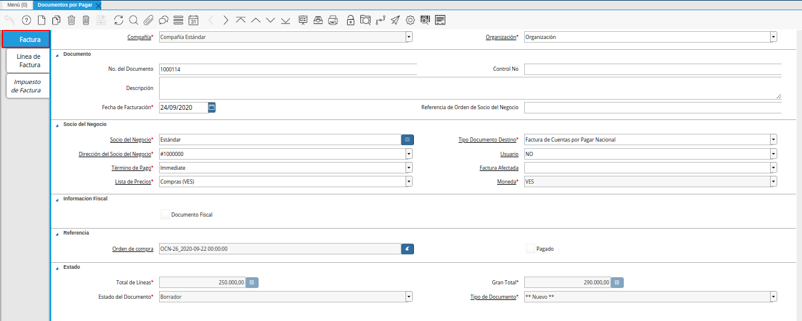
Imagen 26. Pestaña Principal Factura
En el campo “Orden de Compra”, se muestra el número de documento de la orden de compra asociada al documento por pagar.
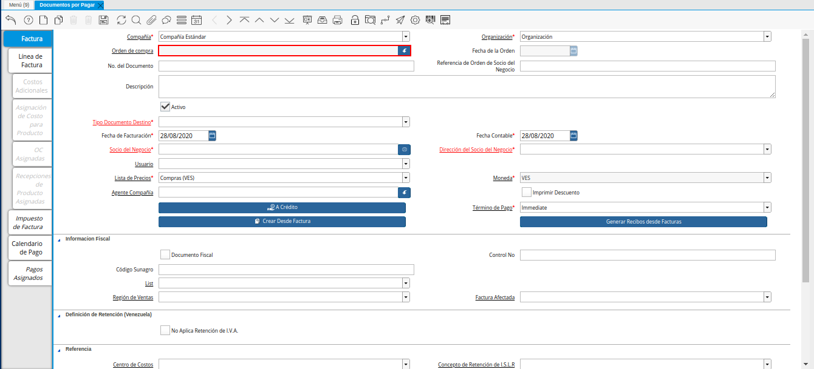
Imagen 27. Campo Orden de Compra
El checklist “Pagado”, indica si el documento ya fue pagado.
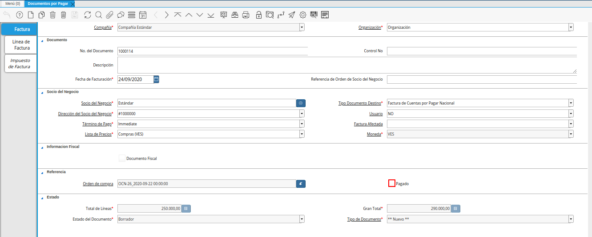
Imagen 28. Checklist Pagado
Podrá visualizar en el campo “Total de Líneas”, la sumatoria total de todos los netos de línea sin impuestos ni cargos, que contiene el documento por pagar.
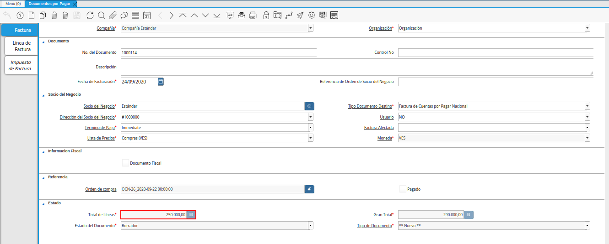
Imagen 29. Campo Total de Líneas
De igual manera, podrá visualizar en el campo “Gran Total”, la sumatoria de todos los montos reflejados en el campo “Total de la Línea”, de todas las líneas que contiene el documento por pagar.
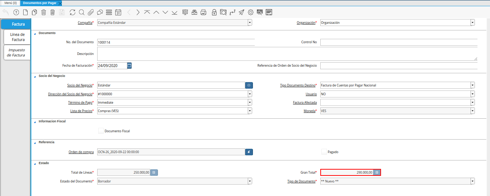
Imagen 30. Campo Gran Total
Note
El gran total identifica el total incluyendo impuestos y totales de fletes en la moneda del documento.
El campo “Estado del Documento”, indica el estado del documento en este momento, para cambiar el estado del documento utilice la opción “Procesar Factura”, desplegada por el icono “Proceso”, ubicado en la barra de herramientas de ADempiere.
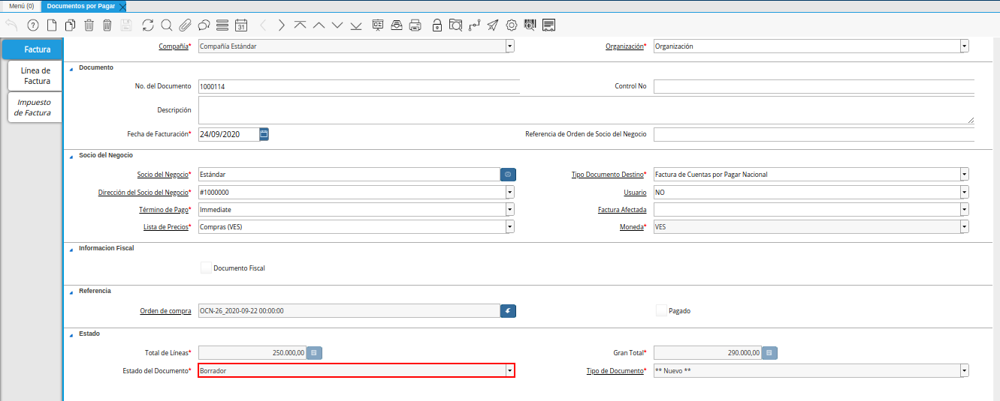
Imagen 31. Campo Estado del Documento
El campo “Tipo de Documento”, indica el tipo de documento que determina la secuencia del documento o las reglas del proceso.
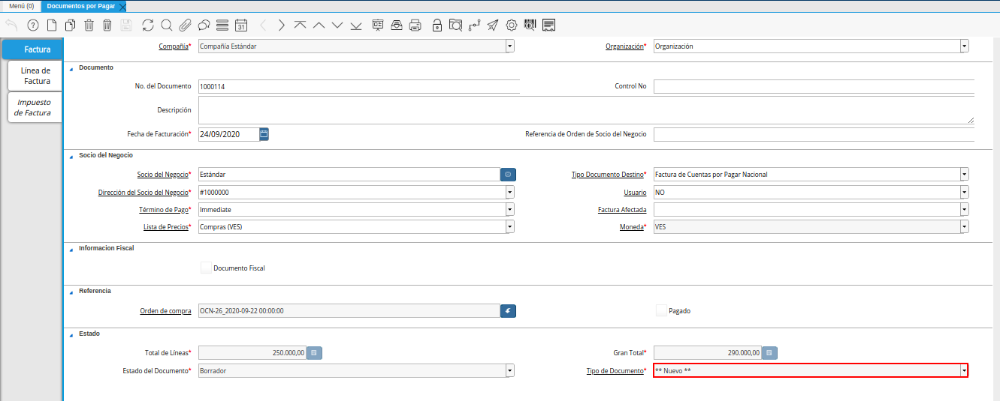
Imagen 32. Campo Tipo de Documento
Seleccione la opción “Procesar Factura”, desplegada por el icono “Proceso”, ubicado en la barra de herramientas de ADempiere.
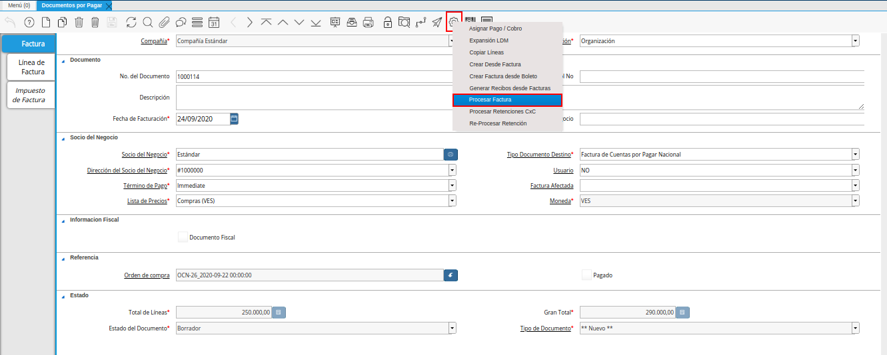
Imagen 33. Opción Procesar Factura del Icono Proceso
Seleccione la acción “Completar” y la opción “OK”, para completar el documento “Orden de Compra”.
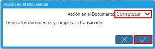
Imagen 34. Completar Documento